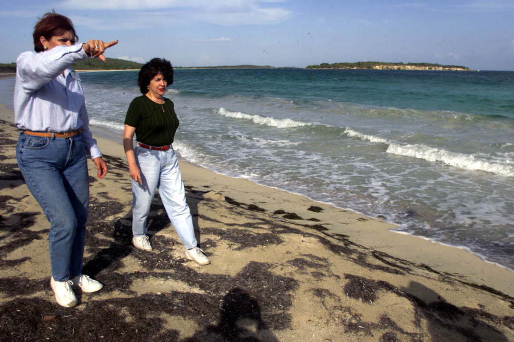
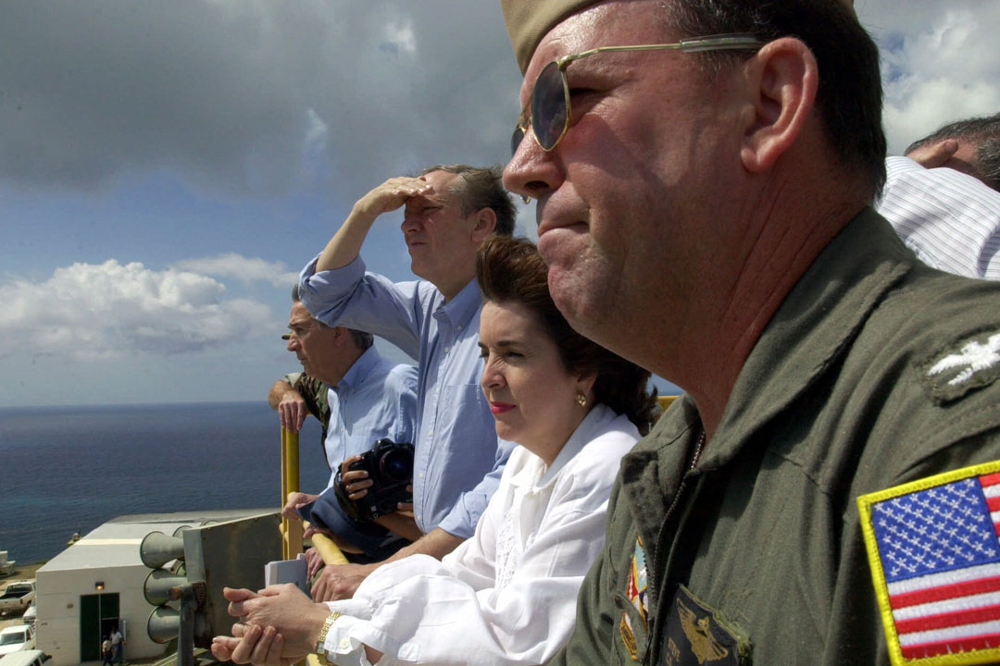
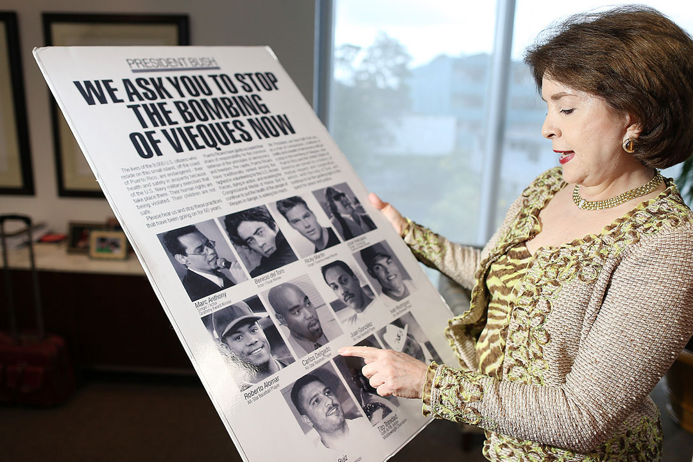

Mienstras era alcaldesa de San Juan, Sila María Calderón, visitó playa Chiva el 24 de mayo de 1999 junto a Norma Burgos, como parte de la comisión para investigar el caso de Vieques. (Archivo/ Xavier J. Araújo)
El capitán de la Marina, Steve Shegrude, la gobernadora Sila Calderón y el gobernador de Nueva York George Pataki observan la zona de bombardeo de la Marina en Vieques el 9 de abril de 2001. (AP)
La gobernadora Sila María Calderón junto al alcalde de Vieques, Dámaso Serrano, confirmando la salida oficial de la Marina de Vieques en el 2002. (Archivo)
Sila María Calderón fue la gobernadora durante la crisis en Vieques, electa poco después de la muerte de David Sanes. (José Madera/ jose.madera@gfrmedia.com)
La exgobernadora observa artículos sobre las protestas en contra de la Marina en Vieques. (José Madera/ jose.madera@gfrmedia.com)